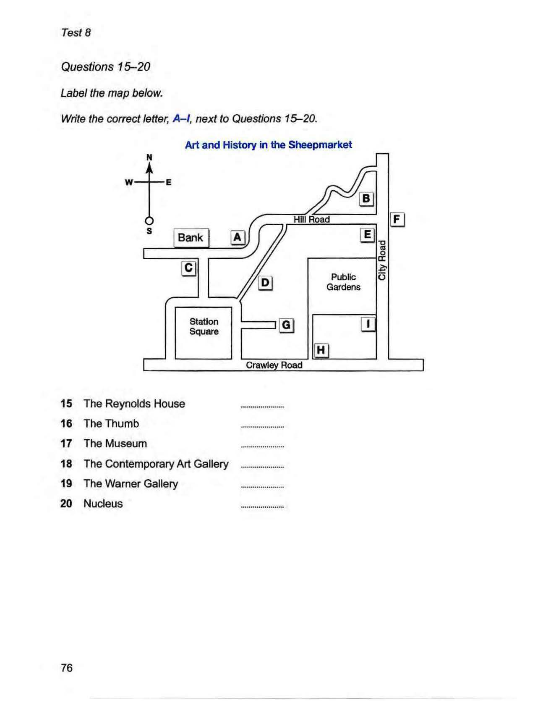

Cambridge IELTS 12
Time: approx. 30 minutes
Instructions
Digital recreation of Cambridge IELTS Listening Test 4.
Type answers in the gaps. Click options for multiple choice.
Print this page for paper-like practice.
Complete the notes below. Write ONE WORD AND/OR A NUMBER for each answer.
Questions 11–14: Choose A, B or C. Questions 15–20: Label the map A–I.

Questions 21–24: Complete the table (ONE WORD). Questions 25–30: Matching A–G.
Complete the table below. Write ONE WORD ONLY for each answer.
| Stages of presentation | Work still to be done |
|---|---|
Introduce Giannetti's book, containing a21of adaptations |
Organise notes |
Ask class to suggest the22adaptations |
No further work needed |
Present Rachel Malchow's ideas |
Prepare some23 |
Discuss relationship between adaptations and24at the time of making the film |
No further work needed |
Complete the notes below. Write ONE WORD ONLY for each answer.
IELTS Listening Test 4 • Cambridge IELTS 12 • Practice recreation (content from official PDF)